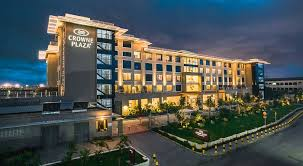
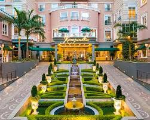
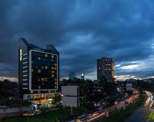
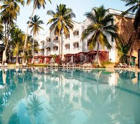
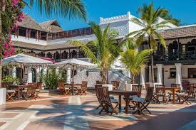
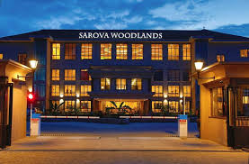
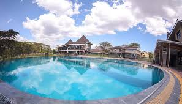
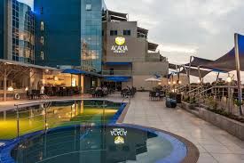
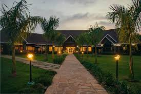
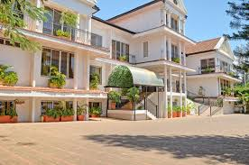

Nairobi
Crowne Plaza NRB
Welcome to Crowne Plaza Nairobi Airport, conveniently located a five-minute drive from Jomo Kenyatta International Airport and The Nairobi Expressway toll station saving you valuable time and ensuring a stress-free journey with complimentary airport transfers on the hour.
Villa Rosa Kempinski
Explore the city in style and comfort by staying at the best luxury 5-star hotel in Nairobi.Offering the perfect fusion of European luxury and Kenyan hospitality, the hotel is a unique destination for both business and leisure. Enjoy our elegant 200 rooms and suites; exceptional spa and restaurants..
Park Inn By Radisson
Explore the city in style and comfort by staying at the best luxury 5-star hotel in Nairobi.Offering the perfect fusion of European luxury and Kenyan hospitality, the hotel is a unique destination for both business and leisure. Enjoy our elegant 200 rooms and suites; exceptional spa and restaurants..
Mombasa
Sarova Whitesands Beach Resort
Sarova Whitesands Beach Resort & Spa is an award-winning luxury beach hotel and an adventure beach resort offering world-class facilities to both corporate travellers and families. Rated among the best hotels in Mombasa, we are located on the pristine beach shore of the Indian Ocean, nestled among towering palms, just half an hour's drive from Mombasa's City Centre & 21 Kilometers from Moi International Airport. Sarova Whitesands Beach Resort & Spa has been appointed as a winner in 2 outstanding categories in the 2023 World Luxury Hotel Awards. Voted Best Luxury Family Beach Resort in Africa and Best Luxury Beachfront Resort in East Africa, these wins are a testament to the unwavering trust and support from our incredible guests that inspires us to
Serena Beach Resort & Spa
Guests arriving at Serena Beach Resort & Spa find an oasis of tranquillity framed by whispering coconut palms, lush gardens and one of the most beautiful white-sand beaches on the Indian Ocean. We invite you to discover a whole new level of relaxation and comfort at this warm, family-friendly tropical paradise in Mombasa, Kenya. With a selection of the best Mombasa hotel guest rooms, restaurants and social areas charmingly arranged among winding lanes and manicured oceanfront lawns, our Shanzu beach resort exudes the timeless
Nakuru
Sarova Woodlands Hotel & Spa
Sarova Woodlands Hotel & Spa is located in Nakuru’s upscale Milimani area, adjacent to the State House and just a short drive away from Nakuru’s city center. Undoubtedly the top luxury hotel in Nakuru City, its strategic location provides easy access by road to scenic locations such as Lake Nakuru National Park, Hell’s Gate National Park, Hyrax Pre-historic Site & Mount Longonot.
Lake Naivasha Resort
Located on the shores of Lake Naivasha and 20 minutes' drive from Hell’s Gate National Park, Lake Naivasha Resort offers an outdoor pool and a restaurant. The accommodation will provide you with a TV, seating area and a balcony. Guests can enjoy lake views. Other facilities offered at the property include water sports facilities, meeting facilities and a shared lounge. An array of activities can be enjoyed on site or in the surroundings, including cycling and fishing. The property offers free parking. This resort is 110 km from Jomo Kenyatta International Airport.
Kisumu
Acacia Premier Hotel
We are proud to let you know that, while there is much to be said for the olden days, even today, there is still magic to be felt under the Acacia. We’re extremely pleased to introduce to you the Home of African Hospitality, the Acacia Premier Kisumu. An oasis of fine service and first-class comfort, a feast for the senses, an ideal rendezvous, a latter-day haven. The Acacia Premier Kisumu is the place for the discerning business & leisure traveler. Situated within the prime leafy suburb of Milimani and straddling the shores of Lake Victoria, the hotel offers convenience, serenity and a flair for the spectacular, for all who visit. Don’t take our word for it, you be the judge; let’s meet under the Acacia!
Ciala Resort
Ciala Resort, rated amongst the best hotels in Kisumu, overlooks the beautiful hills giving clients the serenity, peace and comfort they need. The buildings are designed in an English colonial style with a luxurious modern twist. The modern rooms, landscaping and well-manicured gardens enhance the guest experience.
Sovereign Hotel
Beautiful architecture, a spacious setup and lush gardens create a beautiful and peaceful environment for business and leisure travelers alike. By providing great service, serving exciting culinary delights and offering wellness and fitness choices, our guests are treated to a complete hospitality experience.